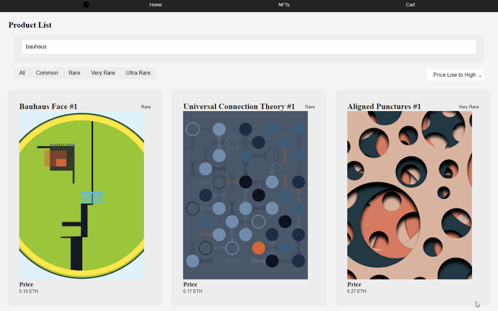
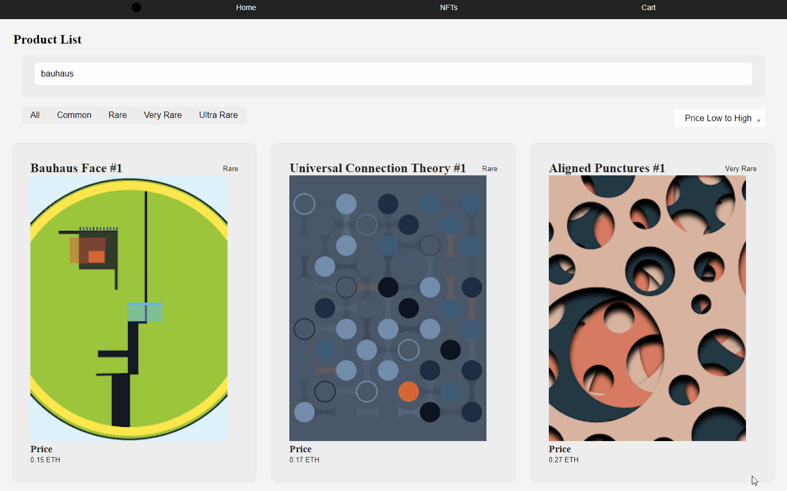

This website is designed as the marketplace for Bauhaus NFTs collection which is inspired by the Bauhaus design movement founded in 1919 by Walter Gropius.
Product Concept
Inspired by the Bauhaus, I use 3 Bauhaus primary colors - red, yellow and blue - as the main colors for the entire website.
What I Learn
I learn to create rest API to build search, filter, sort, and show all features. This helps the website experience more realistic. Super fun process!
I use javascript functions to build search, filter, sort features and the data is retreived by the api.
Make the website responsive
Making the website works on different platforms will help increase more interactions.
Code a Checkout Process
I use php functions to build find, get, reset cart by id saved from MySql database.


 
